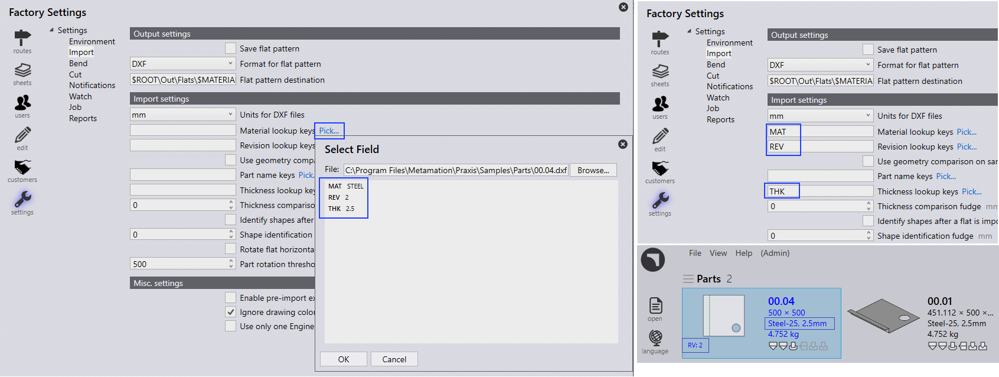
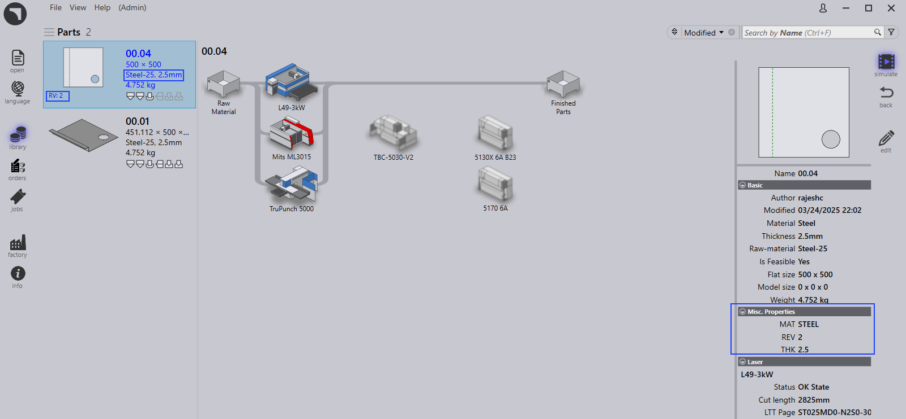

Mapování polí z CAD (vyhledávací klíče)
-
závod → Nastavení → Import, v sekci Nastavení importu. Klikněte na Kliknout… Vyhledat materiál - testovací pole. Zobrazí se stránka _Zvolit pole.
-
Klikněte na Prohlížet…. Vyberte soubor
C:\Program Files\Metamation{APPNAME}\Samples\Parts\00.04.dxf. -
Pole Select Field se vyplní informacemi MAT, REV, THK.
-
Vyberte MAT a klikněte na OK.
Pole Material lookup keys je aktualizováno polem MAT. Obdobně postupujte pro klíče Revision a Thickness.
Soubor → _Otevřít… → Import dílů, vyberte
soubor - C:\Program Files\Metamation{APPNAME}\Samples\Parts\00.04.dxf.
Díl se importuje s materiálem, tloušťkou a také revizí.

Dvakrát klikněte na díl 00.04 a stránka s podrobnostmi dílu zobrazí mapované informace z CAD souboru v části Různé Vlastnictví.
